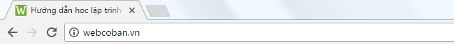
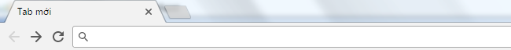
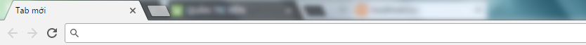

Đối tượng History trong JavaScript
- Đối tượng history chứa lịch sử truy cập của cửa sổ trình duyệt mà bạn đang dùng
- Đối tượng history cung cấp ba phương thức chính:
| back() |
Quay lại trang trước (giống như khi bấm vào nút "quay lại" trên trình duyệt)  |
| forward() |
Tới trang kế tiếp (giống như khi bấm vào nút "tiến" trên trình duyệt)  |
| go() | Tải lại một trang nằm ở một ví trí xác định so với trang hiện tại trong lịch sử truy cập của cửa sổ trình duyệt |
- Ngoài ra, đối tượng history còn có thuộc tính length chứa thông tin số lần truy cập trang của cửa sổ trình duyệt mà bạn đang dùng.
1) Quay lại trang trước
- Để quay lại trang trước, ta truy cập vào phương thức back() của đối tượng history.
<!DOCTYPE html>
<html>
<body>
<button type="button" onclick="quay_lai_trang_truoc()">Quay lại trang trước</button>
<script>
function quay_lai_trang_truoc(){
history.back();
}
</script>
</body>
</html>
Phương thức back() sẽ không hoạt động nếu như trong lịch sử của cửa sổ trình duyệt không tồn tại bất kỳ trang nào được truy cập trước trang hiện tại. Xem ví dụ
2) Tới trang kế tiếp
- Để tới trang kế tiếp, ta truy cập vào phương thức forward() của đối tượng history.
<!DOCTYPE html>
<html>
<body>
<a href="demo?file=1626">Click here</a>
<br><br>
<button type="button" onclick="toi_trang_ke_tiep()">Tới trang kế tiếp</button>
<script>
function toi_trang_ke_tiep(){
history.forward();
}
</script>
</body>
</html>
Phương thức forward() sẽ không hoạt động nếu như trong lịch sử của cửa sổ trình duyệt không tồn tại bất kỳ trang nào được truy cập sau trang hiện tại. Xem ví dụ
3) Tải một trang với vị trí xác định so với trang hiện tại
- Chúng ta có thể tải lại một trang nằm ở một vị trí xác định so với trang hiện tại trong lịch sử của cửa sổ trình duyệt bằng cách truy cập vào phương thức go() của đối tượng history.
- Cú pháp:
| Tham số | Yêu cầu | Mô tả |
| number | Bắt buộc | Vị trí của trang mà bạn muốn tải lại so với trang hiện tại. Ví dụ:
|
<!DOCTYPE html>
<html>
<body>
<button type="button" onclick="quay_lai_trang_truoc()">Quay lại trang trước</button>
<script>
function quay_lai_trang_truoc(){
history.go(-1);
}
</script>
</body>
</html>
Phương thức go() sẽ không hoạt động nếu trang mà bạn muốn tải lại không tồn tại
4) Lấy số lần truy cập trang của cửa sổ trình duyệt
- Ví dụ, nếu dưới đây là quá trình truy cập trang trên cửa sổ trình duyệt mà bạn đang dùng
trang1.html => trang2.html => trang3.html => trang2.html => trang4.html
thì cửa sổ đó sẽ có số lần truy cập trang là 5
- Để lấy số lần truy cập trang của một cửa sổ trình duyệt, ta truy cập vào thuộc tính length của đối tượng history.
<script>
var x = history.length;
</script>
Đối với cửa sổ trình duyệt mà bạn đang dùng, biến x sẽ lưu trữ giá trị là:
- Lưu ý: Đối với trình duyệt Chrome, Cốc Cốc, .... Khi bạn mở một cửa sổ mới tuy chưa truy cập trang nào (giống hình bên dưới) nhưng trình duyệt vẫn sẽ tính đó như một lần truy cập trang.
